yyaxtoolbar
extended axes toolbar for yyaxis charts
Contents
Syntax
yyaxtoolbar
adds a custom axes toolbar for yyaxis plots on the current axes to facilitate interactive zooming and setting limits and ticks on both y-axes.
yyaxtoolbar(ax)
adds the toolbar to axes ax.
yyaxtoolbar will create a yyaxis chart if not yet existing.
The following demo shows a typical workflow for interactively exploring yyaxis charts with the aid of the yy-axtoolbar's buttons.
Generate a yyaxis Chart
% --- sample data x = -5:0.1:5; y1 = 4+5*sin(0.5*x+pi/6) + sin(x-pi/8); y2 = 2e3+3.1*(1000 + 333*sin(1.25*x+pi/6) + 250*sin(2*x-pi/8)); % --- plot data with yyaxis figure('Name','yyzoom demo') yyaxis left plot(x,y1,'o-') ylabel('y_1') grid on yyaxis right plot(x,y2,'o-') ylabel('y_2')
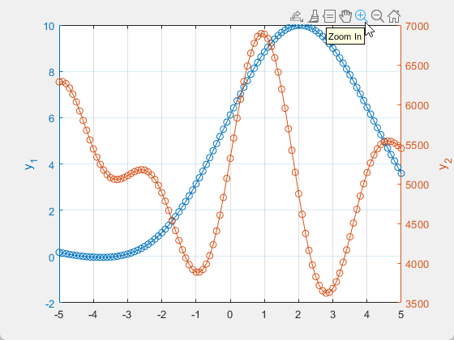
If you now use the axes toolbar's 'Zoom In' tool (highlighted above) you would zoom on the active side of the chart only. The active y-ruler side is the last one clicked or modified (the right one in this case), but it is not visually highlighted.
Add the yy-Axtoolbar
yyaxtoolbar
sets up the yy-axtoolbar with some more icons/buttons:
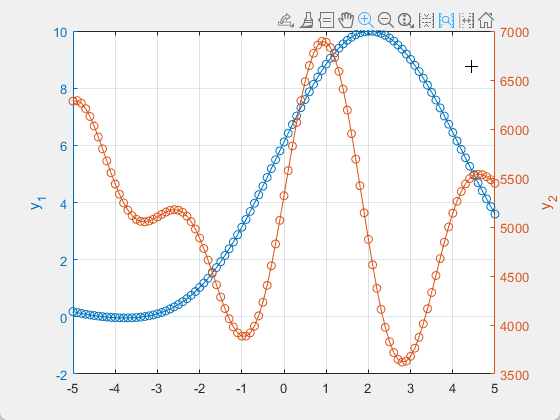
Use the yy-Axtoolbar Main Buttons
These additional toolbar buttons assist you during the interactive exploration of the yyaxis chart:
Active Side Indicator And Toggle
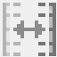
The icon highlights the active side of the chart. The dashes next to the y-axis ruler symbols indicate that the tick values of the ruler are computed automatically by Matlab®, i.e. the ruler's TickValuesMode is 'auto'.
Click on the button to toggle the active side.
Linear Zoom Link Indicator and Toggle
If this state button's icon is highlighted in blue, both y-axes will zoom simultaneously as described in the yyzoom documentation.
Click on the button to renew or disable the yyzoom's linear zoom link.
Align Y-Ticks
Click on this button to align the ticks on both y-axes so that they now share a common major axes grid (see yytick documentation).
Note that some y-axes limits may be adjusted for that purpose. The little dashes in the Active Side Indicator icon show which ruler still has TickValuesMode='auto'. This is yytick's "primary" ruler, the other one the "dependent" ruler.
If you want to keep the ticks aligned when zooming in, renew the linear zoom link once (click or double-click the Linear Zoom Link button, whichever results in an activated state).
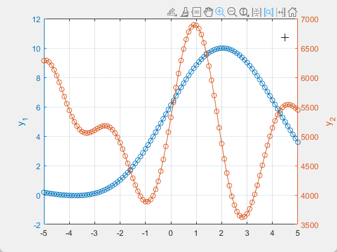
Now zooming in a region of the axes canvas...
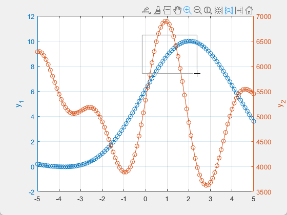
affects both y-axes simultaneously and keeps the y-ticks aligned:
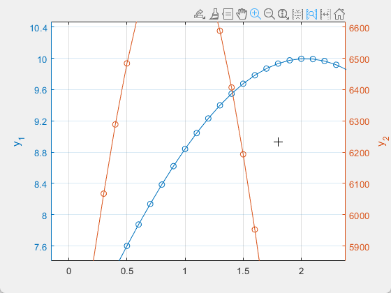
Supplemental yy-Axtoolbar Buttons (Drop-down Menu)

In the drop-down menu of the yyzoom axes toolbar some more icons show up.
Y-Ticks Auto
Reset the TickValuesMode property of both y-rulers back to 'auto'. The Y-Ticks are not necessarily aligned anymore.
LimitMethod Buttons

Apply one of the three limit methods for automatic y-limit selection (see ylim), from top to bottom: 'tight', 'padded', 'tickaligned'. It is taken into account whether there is one dependent y-axis (ticks are kept aligned) or not (methods are applied to each y-axis separately).
Zoom to yyzoom Base Limits
Zoom to the recent y-limit base values of the linear zoom link.
Limits & Ticks Auto
Zoom out all axes, setting both the 'LimitsMode' and the 'TickValuesMode' properties back to 'auto'. The Y-Ticks are not necessarily aligned anymore.
Zoom Reset
Set the current zoom level as the baseline zoom level as with zoom('reset').
Aligned Ticks and Limits in a Zoomed in Region
The following example demonstrates how to zoom in a region and have both data sets displayed with good resolution on their respective y-axis, with aligned ticks and tick-aligned axis limits.
Choose the x-axis region of interest.
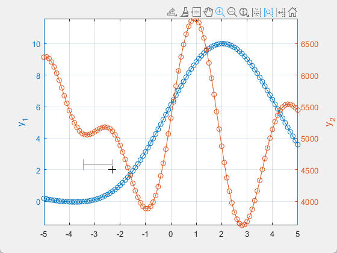
Remove the current tick alignment and select tight limits.
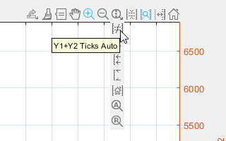
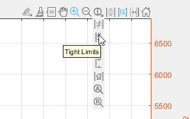
Now there are tight limits on each y-axis.
Enable tick alignment again, renew the linear zoom link (double-click), and choose tick-aligned limits.
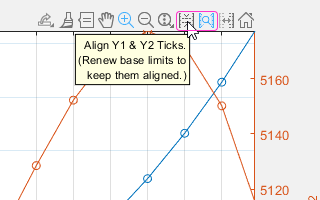
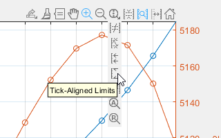
The chart now has easily readable limits and ticks and a good resolution on both y-axes for the region displayed:
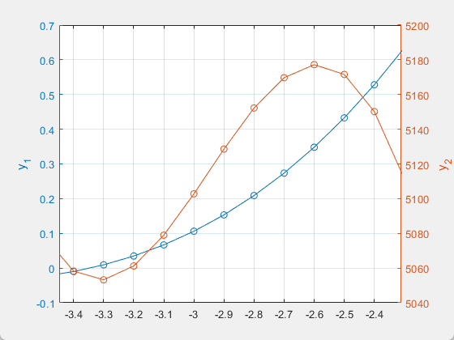